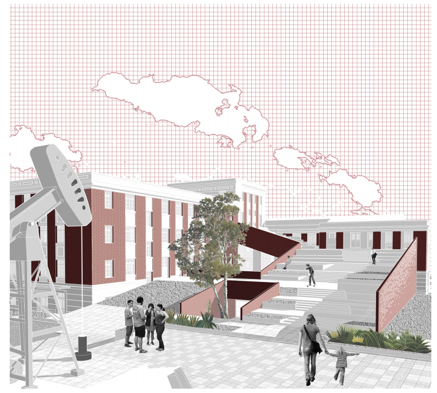
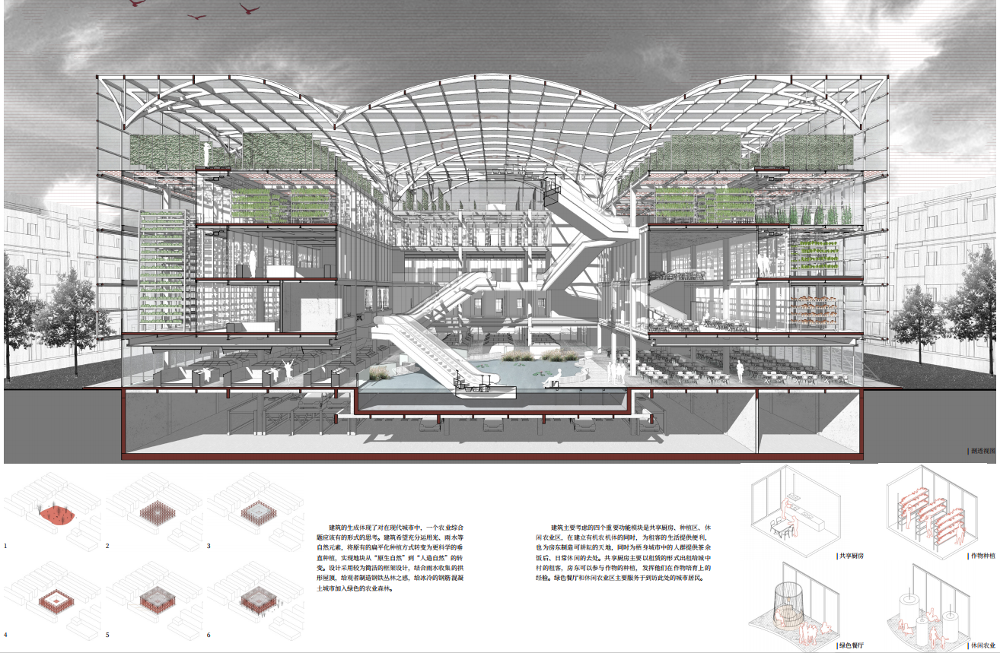
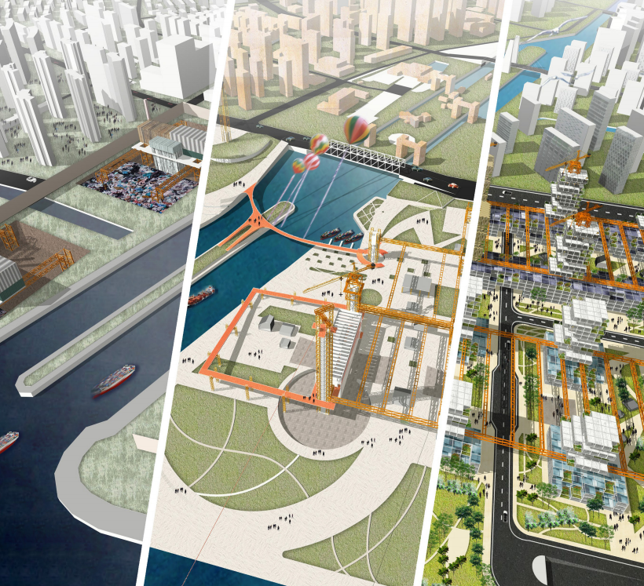
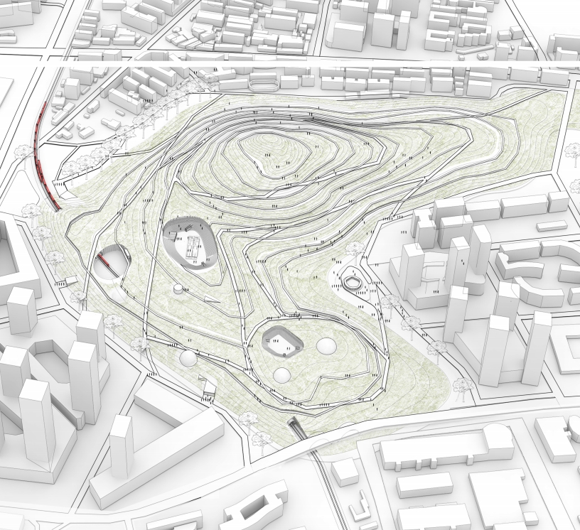
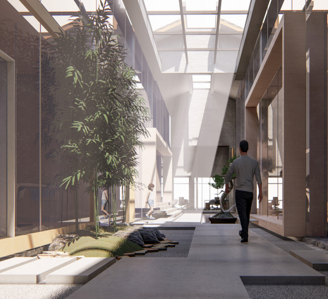
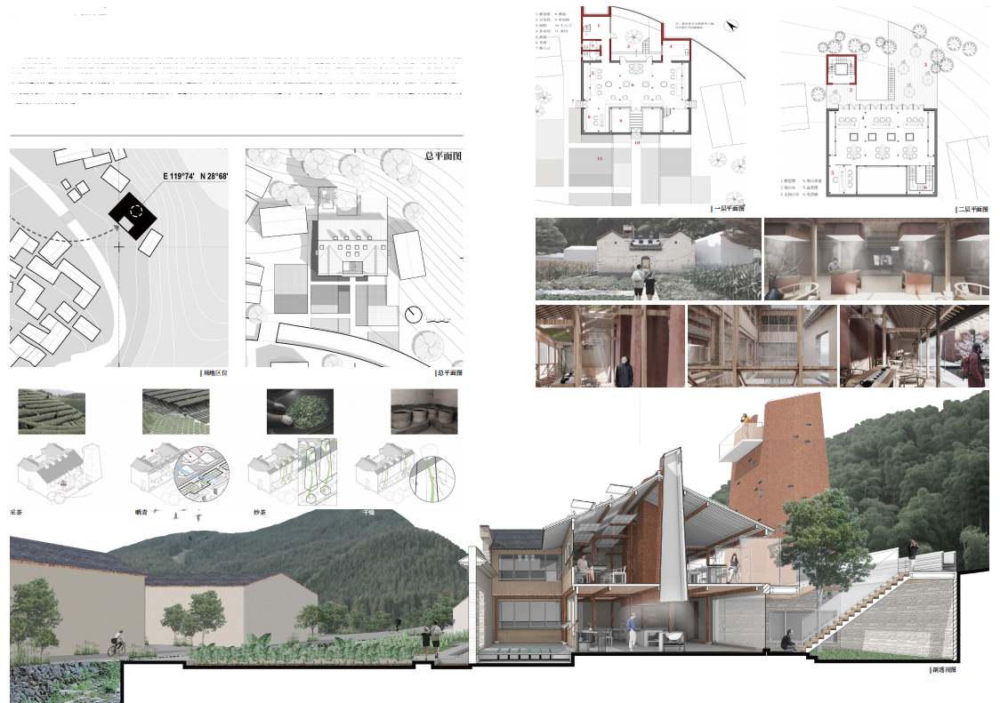
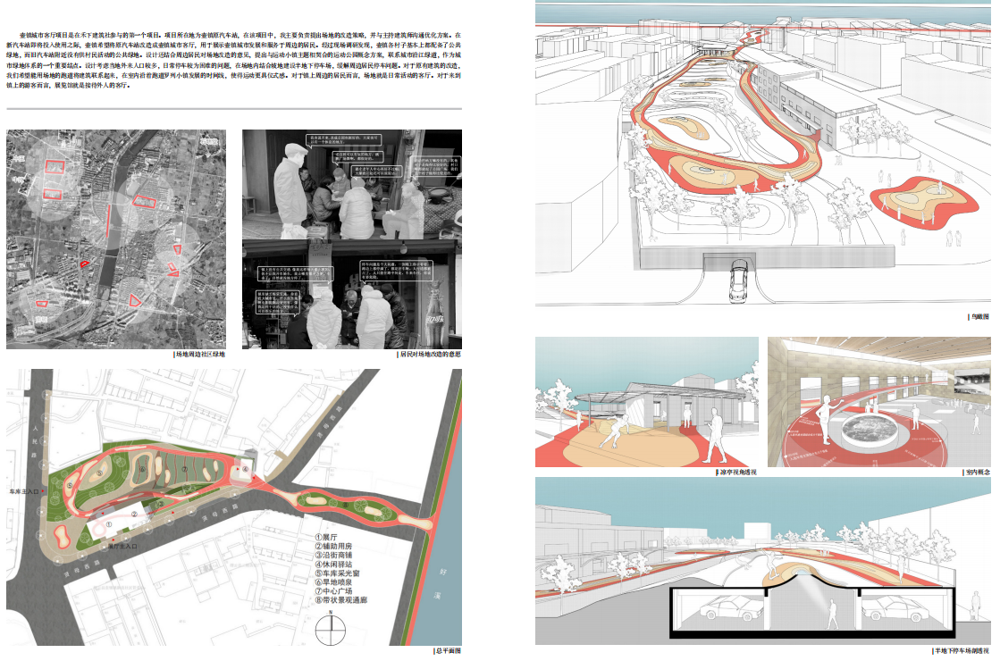
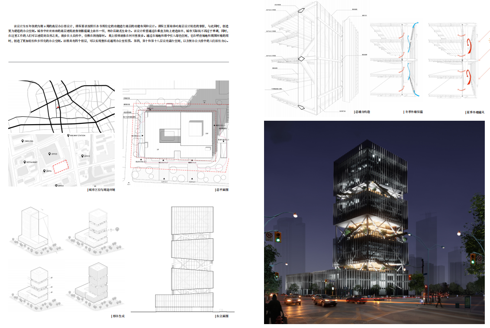

Up the Stairs
As a reflection of the needs of people's activities, architectural functionswill be adjusted due to changes in behavior patterns. Therefore, for a building with vitality, its material space will exhibit diachronic changes and development, and exhibit the characteristics of a sustainable life cycle. The development of the relationship between its form and function seems to always be in a dynamic master-slave relationship. Correspondingly, the relationship between "new" and "old" pointed to by architectural renewal is often a process of dynamic change with diachronic and relative characteristics.

Super Farm
As the city grows, the original villages are gradually surrounded,forming the unique urban village in the city. The urban village is the scar of urban development, but at the same time it also provides shelter for migrant workers. The design is based on preliminary research, discovers the pain points of various groups of people in urban villages, thinks about how to improve the life of urban villages, and how to further influence the city. The design forms a closed loop of rainwater collection, nutrient replenishment, and crop irrigation through the fit of structure and function, rational use of natural resources such as light, and planting different types of crops for different lighting environments.

Waste Mine
With the development of cities, the early garbage landfills were gradually engulfed and surrounded by cities, but the land was difficult to use because of the existence of garbage. Garbage marks our past, but we treat it as waste. In the underdeveloped era, the landfill was not designed, and the landfilled waste was not treated. The landfill has become an eternal scar in the city, affecting the city's environment and the value of the surrounding land. The design treats the early garbage landfills as mines for development,improving the value of the surrounding land while improving the environment.

Through the City Heart
Today, with convenient transportation, people can realize rapid spatial transformation. But what cannot be ignored is the influence of the transportation network on the urban form. The slogan "To get rich, build roads first" shows the importance of the transportation network. However,roads can still be crossed, and the fragmentation of urban space caused by railways and the destruction of the value of plots along the line are more common and lasting. How to solve the problem of railway cutting the urban texture and re-stitching the urban texture is the main consideration in this case.

Courtyard of Light
With the improvement of the living standards of our residents, our people's requirements for the office environment are also increasing. Office is no longer just to meet people's work needs, but also has an elegant environment, excellent supporting facilities and venues, so that going to work is no longer a chore.

Wuyang Teahouse

Huzhen city parlor
